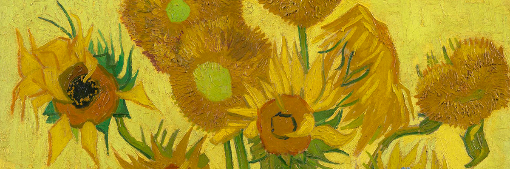

Vase With 15 Flowers
The sunflower paintings had a special significance for Van Gogh: they communicated 'gratitude', he wrote. He hung the first two in the room of his friend, the painter Paul Gauguin, who came to live with him for a while in the Yellow House.